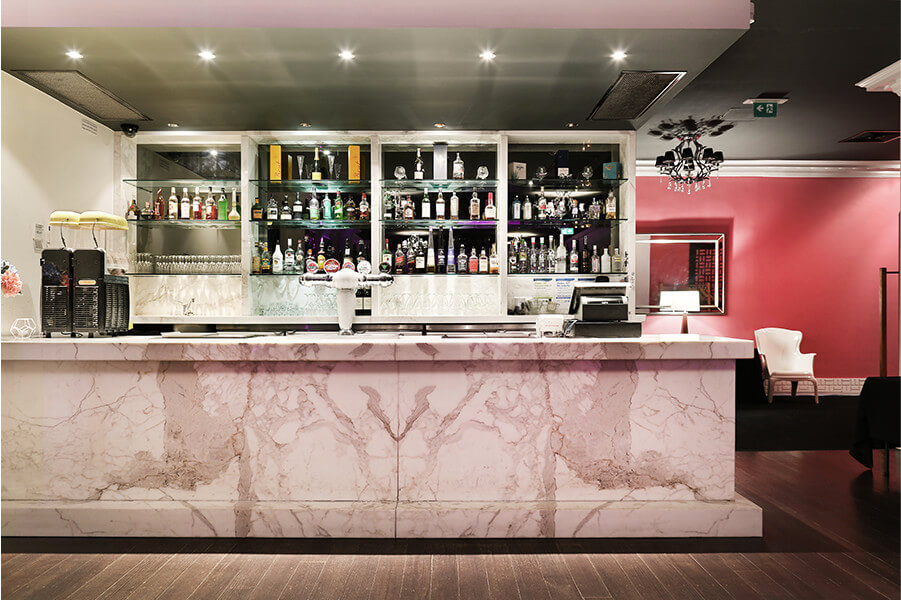
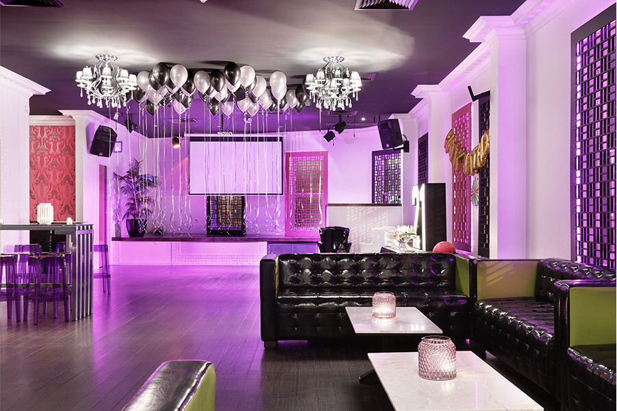

Capacity
The Likor Lounge has a maximum capacity of 300 guests and a minimum of 80 guests on a Saturday night.
Availability
The Likor Lounge is available Monday through to Sunday from 12pm – 1am. Room hire is for 5.5 hours per event.
Facilities
The Likor Lounge is a fully self contained function room with a private outdoor area and pristine bathroom facilities.
The Likor Lounge is located to the left of the main entrance to The Stolberg on the second level.
*No wheelchair access *No service elevator